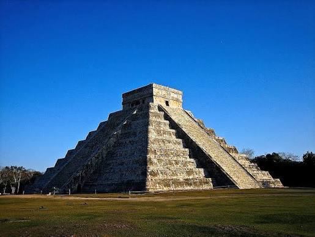
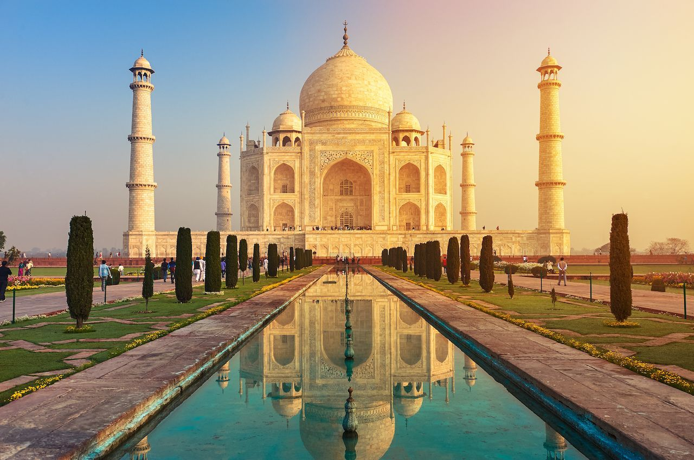

1. Chichén Itzá
México: Legendaria ciudad maya famosa por la pirámide de Kukulkán y sus precisos fenómenos astronómicos durante los equinoccios.
Ver información completaProyecto web desarrollado por Mishel Ichau

México: Legendaria ciudad maya famosa por la pirámide de Kukulkán y sus precisos fenómenos astronómicos durante los equinoccios.
Ver información completa
Italia: Impresionante anfiteatro del siglo I d.C. que albergaba luchas de gladiadores y espectáculos en el Imperio Romano.
Ver información completa
Brasil: Colosal estatua Art Déco de 38 metros situada sobre el cerro del Corcovado, símbolo emblemático de Río de Janeiro.
Ver información completa
China: Gigantesca red de fortificaciones de más de 21,000 km construida para defender el imperio a lo largo de siglos.
Ver información completa
Perú: Sagrada ciudadela inca incrustada en las alturas de los Andes, célebre por su arquitectura en piedra sin mortero.
Ver información completa
Jordania: Histórica "Ciudad Rosa" esculpida directamente en acantilados de piedra por la civilización nabatea.
Ver información completa
India: Majestuoso mausoleo de mármol blanco erigido por el emperador Shah Jahan como tributo de amor a su esposa.
Ver información completa